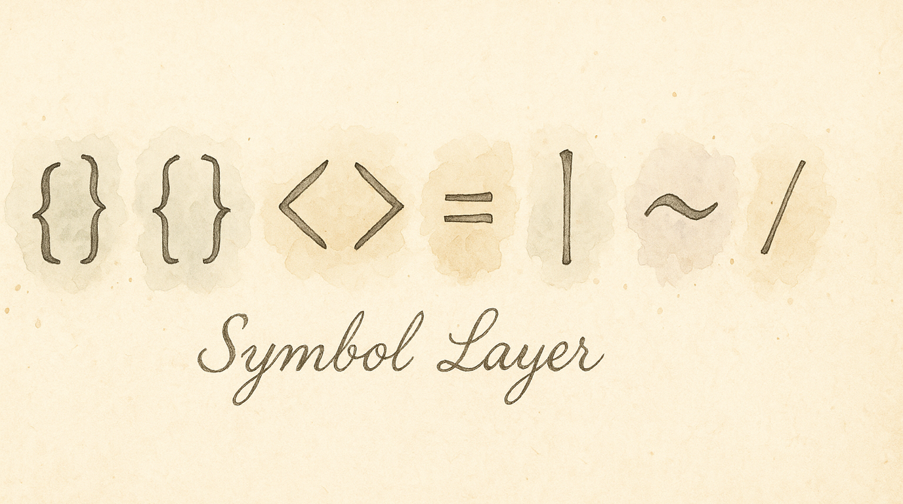

Brackets, pipes, tildes, angle brackets — the symbols you type hundreds of times a day in code are scattered across the keyboard behind Shift reaches and awkward pinky stretches. The Symbol layer puts them all under your home row, organized by how you actually use them.
Enable the Symbol pack and you gain a dedicated symbol layer with three preset layouts to choose from:
Each preset maps 20–29 keys. Pick the one that matches how you think about symbols.
Requires Vim Navigation (or another Leader pack) to be enabled.
Two-step activation:
The S activator was chosen as a mnemonic for "Symbols."
Easiest to learn — shifted symbols stay in their number-row positions:
Top row: ! @ # $ % ^ & * ( ) Home row: ~ ` - = + [ ] { } | Bottom row: \ _ / ? ' " : < >
The mental model: "my keyboard, but everything is shifted."
Designed for code where brackets come in matched pairs:
Left hand (opening): { ( [ < - | + _ /
Right hand (closing): % ^ & * ` = > ] ) }
The mental model: "left hand opens, right hand closes."
Optimized for typing common code patterns:
Home row: { ( [ < = - > ] ) }
The <, =, -, > cluster on F-G-H-J lets you roll common bigrams like ->, =>, <=, and != as comfortable finger rolls.
| If you… | Try… |
|---|---|
| Want the easiest learning curve | Mirrored |
| Write lots of nested brackets (JSON, Lisp, HTML) | Paired Brackets |
| Write Go, Rust, TypeScript, or arrow-heavy code | Programmer |
You can switch presets any time — the change takes effect immediately.
Check which preset is selected. Each preset has a very different layout. Look at the overlay to see the current mapping.
The current version uses preset layouts. Custom per-key symbol mapping is planned for a future update.